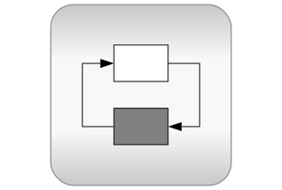

Package Modelica® is a standardized and free package that is developed together with the Modelica® language from the Modelica Association, see https://www.Modelica.org. It is also called Modelica Standard Library. It provides model components in many domains that are based on standardized interface definitions. Some typical examples are shown in the next figure:
For an introduction, have especially a look at:
This version of the Modelica Standard Library consists of
that are directly usable (= number of public, non-partial classes). It is fully compliant to Modelica Specification Version 3.2 Revision 2 and it has been tested with Modelica tools from different vendors.
Licensed by the Modelica Association under the Modelica
License 2
Copyright © 1998-2015, ABB, AIT, T. Bödrich, DLR, Dassault
Systèmes AB, Fraunhofer, A. Haumer, ITI, C. Kral,
Modelon, TU Hamburg-Harburg, Politecnico di Milano, XRG
Simulation.
This Modelica package is free software and the use is completely at your own risk; it can be redistributed and/or modified under the terms of the Modelica License 2. For license conditions (including the disclaimer of warranty) see Modelica.UsersGuide.ModelicaLicense2 or visit https://www.modelica.org/licenses/ModelicaLicense2.
Modelica® is a registered trademark of the Modelica Association.
| Name | Description |
|---|---|
| UsersGuide | User's Guide |
| Library of basic input/output control blocks (continuous, discrete, logical, table blocks) | |
|  ComplexBlocks | Library of basic input/output control blocks with Complex signals |
| StateGraph | Library of hierarchical state machine components to model discrete event and reactive systems |
| Library of electrical models (analog, digital, machines, multi-phase) | |
| Library of magnetic models | |
| Library of 1-dim. and 3-dim. mechanical components (multi-body, rotational, translational) | |
| Library of 1-dim. thermo-fluid flow models using the Modelica.Media media description | |
| Library of media property models | |
| Thermal | Library of thermal system components to model heat transfer and simple thermo-fluid pipe flow |
| Library of mathematical functions (e.g., sin, cos) and of functions operating on vectors and matrices | |
| Library of complex mathematical functions (e.g., sin, cos) and of functions operating on complex vectors and matrices | |
| Utilities | Library of utility functions dedicated to scripting (operating on files, streams, strings, system) |
| Library of mathematical constants and constants of nature (e.g., pi, eps, R, sigma) | |
| Library of icons | |
| SIunits | Library of type and unit definitions based on SI units according to ISO 31-1992 |